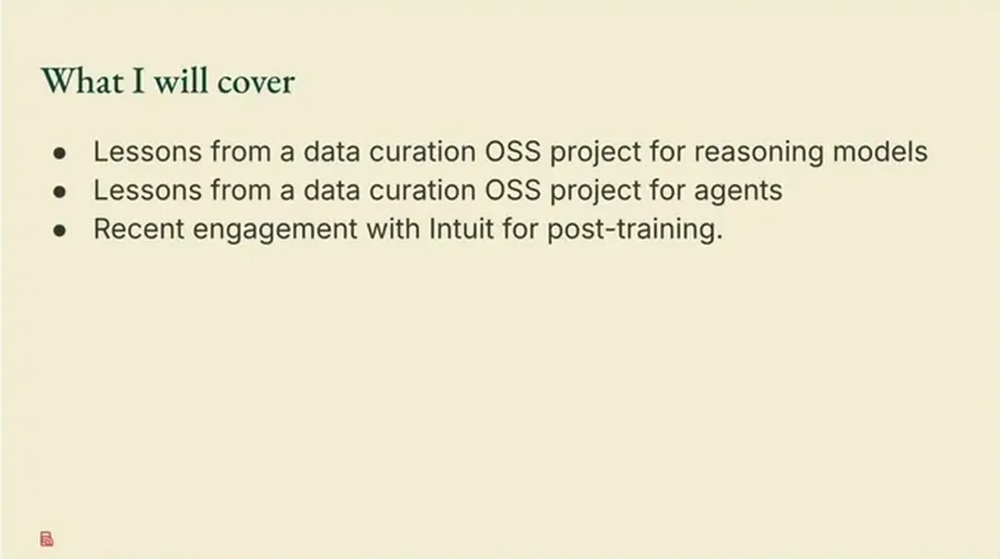
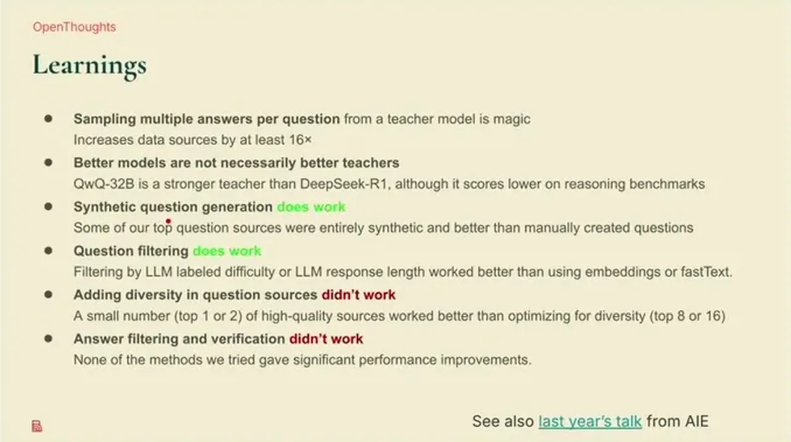
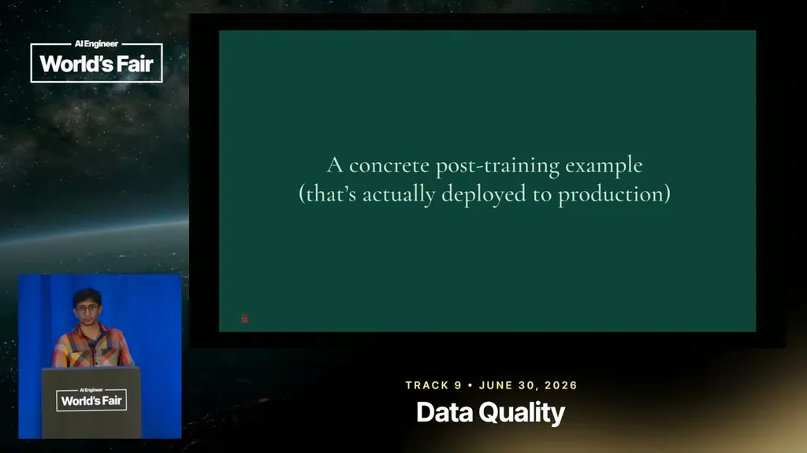

Sathiamoorthy frames Bespoke Labs' thesis: models, compute, and post-training infrastructure are now well-defined and widely available, but most enterprises and even frontier labs lack access to good-quality data and RL environments. He argues curators should think like the researchers consuming their data, to understand what actually moves benchmark metrics.
“for post training be it SFT or or uh reinforcement learning data is the bottleneck right so when when I talk about data RLNs are also something I'm calling it as data”
▶ watch at 04:41“as you're curating data you want to put yourself in the shoes of the researcher to see what what does it take to you know uh actually move the metrics on the models”
▶ watch at 02:02
As benchmarks shift from testing what models know to what agents can do, Sathiamoorthy identifies reliability as the key blocker to running agents autonomously for hours, days, or weeks: a single wrong tool call or mistake breaks the chain, and post-training is one of the primary levers (alongside prompting and harness changes) for improving it.
“at some point something falls apart like either they called the wrong tool or they made a mistake and you know what what not, right?”
▶ watch at 03:38Building the Open Thoughts reasoning dataset and its agent follow-up, the team found several counterintuitive results: sampling multiple answers per question (rather than more unique questions answered once) improved outcomes, likely by adding diversity of reasoning traces; stronger teacher models were not consistently the best teachers for generating training data; and synthetic rewriting/task augmentation underperformed expectations in the agent-curation work.
“sampling um multiple answers per question works pretty well”
▶ watch at 10:54“the stronger teachers are not always the best uh uh stronger models are not always the better teachers”
▶ watch at 11:26“in this whole process of building this open thoughts agent SFT still contributed a lot to the gains”
▶ watch at 13:02
For Intuit's Credit Karma credit-card-recommendation reasoning feature, a fine-tuned model would hallucinate specific numbers (e.g., 0% APR) due to an imbalanced dataset, breaking compliance requirements. The fix was reformatting training data from plain-language prompt/response pairs into a tagged structure that directed the model to focus on response form rather than specific numbers, which improved compliance, latency, and throughput.
“the data set can be quite impa imbalance and lot lots and lots of places for example you will have 0% APR and the model after fine-tuning can kind of hallucinate the these uh numbers”
▶ watch at 14:33“we added these uh tags which helped the model to focus on you know uh the the kind of form rather than the specific numbers itself and that gave a big boost”
▶ watch at 15:03
The claim that stronger teacher models aren't always better teachers is reported without the underlying benchmark numbers in this talk, so the magnitude and generality of the effect (versus being specific to the Open Thoughts recipe) is not verifiable from this source alone (ours).
| Stance | Claim | t |
|---|---|---|
| asserts | Sampling multiple answers per question worked better for curating reasoning data than answering more unique questions once each, likely due to added diversity in reasoning traces. | 10:54 |
| asserts | Stronger teacher models were not consistently the best source of training answers; in the agent-curation work, some non-frontier models outperformed larger models as teachers. | 11:26 |
| warns | An imbalanced training dataset (e.g., many 0% APR examples) caused the fine-tuned Credit Karma model to hallucinate specific numeric details after fine-tuning. | 14:33 |
| recommends | Reformatting prompt/response training pairs with structural tags, instead of plain language, directed the model to focus on response form rather than specific numbers, giving a large improvement. | 15:03 |
| asserts | Agent autonomy over long durations is blocked mainly by reliability failures, such as calling the wrong tool or making a mistake mid-task. | 03:38 |
| asserts | For post-training, whether SFT or reinforcement learning, data (including RL environments, which Sathiamoorthy also classifies as data) is the primary bottleneck. | 04:41 |
| asserts | In building the Open Thoughts agent dataset, SFT contributed the majority of performance gains, with compute-intensive RL adding only the last few percentage points. | 13:02 |
| recommends | Data curators should adopt the mindset of the researchers who will consume the data, to understand what actually moves model metrics. | 02:02 |
Machine-readable copy embedded in this page (script#ontology) and in the corpus ontology.